Fundamentals of immunlogy
Notes from the Fundamentals of Immunology Specialization courses.
Week 1 - Introducing the Metaphors
Lesson 2 - Staying Healthy
Every organism needs to defend themselves against pathogens and they all have their own mechanisms. There are two ways:
- Innate immunity - predetermined and
- Adaptive immunity (vertebrates) - form of immunity that involves changes to the DNA and the production of antibodies and specialised cells.
Many insects’ immune molecules are coded for by a gene called DSCAM. DSCAM can produce a message that can be spliced in over 38,000 different ways. So they can produce a very large variety of molecules in response to a particular infection.
Two downsides to your immune system:
- Energentically expensive.
- Serious threat to your own body that requires control to prevent attacking your own tissues.
Lesson 3 - Pathogen Varieties
Immune system needs to differentiate between pathogens and your cells.
Survey of pathogens:
- Viruses - nucleic acid from inside an envelope with protein coats on the outside.
- Bacteria - have no nucleus and their ribosomes are different from us, making them good antibiotic targets.
- Fungi - eukaryotic but they have a cell wall on the outside.
- Unicellular eukaryotes - harder to treat due to similarities with our cells.
- Multicellular worm - they are among the few parasites or pathogens that can penetrate intact skin.
Lesson 4 - Pathogen Recognition
Innate immune system:
- They have a series of pattern recognition receptors that recognise a pathogen that are common to a broad group and do not depend on recognising any one individual.
- Things are already in the ready (genetically pre-determined) and if a new pathogen arrives the innate response will take place pretty much immediately.
Adaptive immune system:
- Rearrange DNA and undergo selection processes to help generate an immune response.
- Relies on antibodies, T-cell, and B-cell lymphocytes.
- Mounts a very specific response and retains a memory of the pathogen.
Lesson 5 - Words of Advice
- One of the biggest sources of transmission of viruses and also many bacteria is on people’s hands.
- Wash your hands with soap and avoid touching your face.
- If you are sick, stay in bed because if you stay in bed, you can’t spread the disease. And if you can’t spread the disease, then a disease will be forced to evolve into a milder form.
Lesson 6 - Metaphors of Power Politics
Analogy between national defence and an immune response; both are expensive but necessary and frugality is required. Type types of responses:
- TH1 response - all out war.
- TH2 response - containment.
- Treg response - peaceful co-existance.
Sometimes cancer cells can trigger a T-regulatory response so that the immune system will leave them alone.
Lesson 7 - Innate Versus Defensive Responses
The innate and adaptive immune systems work together to mount a response towards eliminating a particular pathogen. Below is one particular pathway of the two systems working together.
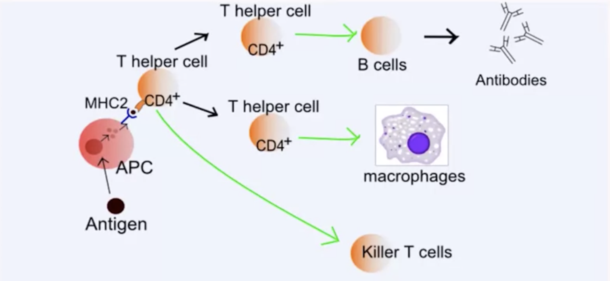
B-cells are part of humoral immunity and help to generate antibodies.
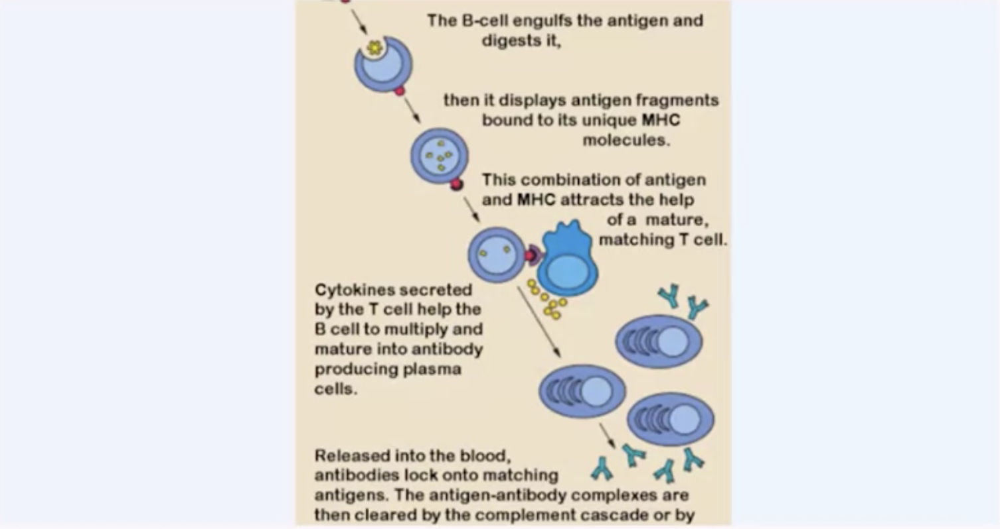
Table of properties between helper and cytotoxic T-cells.
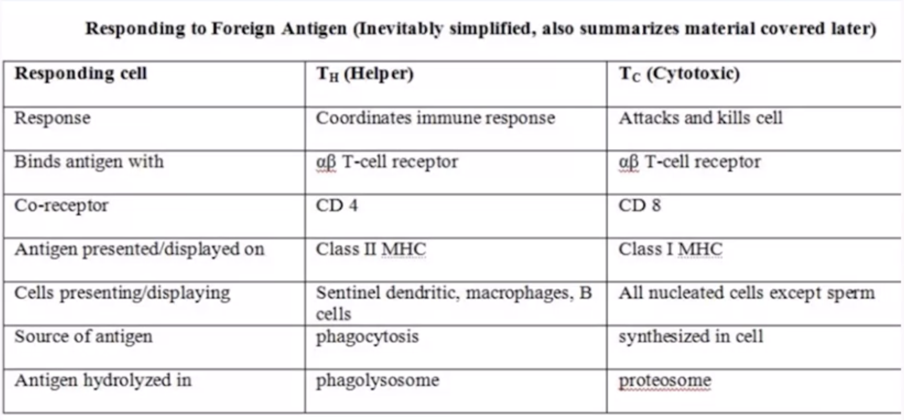
Week 2 - Surveying the Cells and Organs of the Immune System
Lesson 1 - Terminology
There are a lot of terms in immunology and this lesson aims to help you better memorise them. Immunology can be subdivided and organised into different areas, such as innate vs. adaptive and primary vs. secondary organs, and various terms are associated with these subdivisions. A division of labour in the immune system as the lecturer puts it.
- Primary organ is where most of the initial cell division that forms immune cells takes place and in the case of the adaptive immune system, this is where genes are rearranged to make various recognition molecules. E.g. bone marrow and thymus.
- Secondary organs are where the immune cells are activated and communicate with each other. E.g. lymph nodes, spleen, and regions of the gut.
Myeloid cells are all going to be innate and will be found everywhere; lymploid cells are the ones that are found mostly in the lymph. One of the first decisions that a cell has to make, as it turns into blood cells, is whether to become myeloid or lymploid.
On the nomenclature of CD: stands for cluster of differentiation and that refers to how cells come out of various separation procedures that involve a technique called flow cytometry. CD is simply a tag that indicates the order in which it was discovered and nothing else. It is a molecule on the surface of some cell that influenced where it came out during the separation. Sometimes CD labels get another label as well such as a common name.
All cells that rearrange their genes (B and T cells) are lymphoid. However, NK cells are lymphoid and innate. Some sentinel dendritic cells (all innate) can be myeloid or lymphoid. Most innate cells come from the bone marrow, a primary lymphoid organ.
Lesson 2 - Hematopoiesis
Hematopoietic pluripotent stem cells give rise to all of the possible blood types. As hematopoietic stem cells begins to differentiate, surface molecules expressed on its surface and will become part of a lineage. Hematopoietic stem cell differentiation occurs via a series of signals to go into one pathway or another; at the very start signals will dictate whether to remain as a hematopoietic stem cell and continue to divide and regenerate (BMI-1) or start developing into specific immune cells (GATA-2). Specifically, one of the first things that seems to happen is that they put something in their surfaces called Lin, for lineage and so these will be lineage plus cells whereas the hematopoietic cells will be lineage minus or Lin minus. After that the cell has to decide whether to be part of the lymphoid or myeloid lineage.
Erythrocytes and megakaryocytes are produced from myeloid progenitors. White blood cells include any leukocyte: neutrophils, macrophages, B cells, T cells, NK cells etc. NK and B are lymphoid. Neutrophils and RBCs are myeloid. Dendritic cells is a term that encompasses a wide variety of antigen-presenting cells of different origins, morphologies, and locations.
Lesson 3 - Myeloid Granulocytes
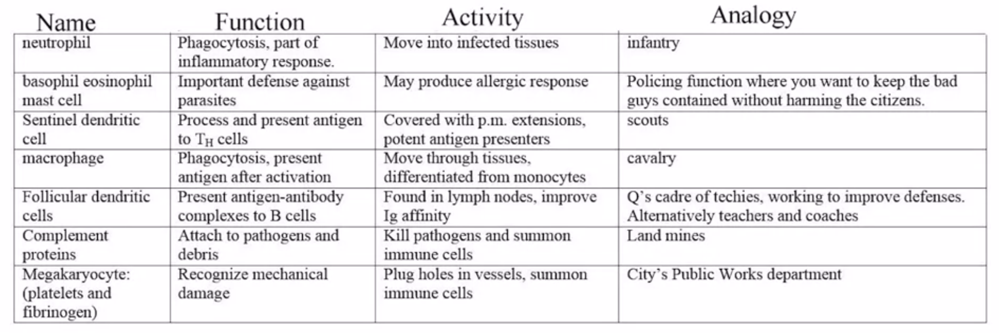
Neutrophil - most common granulocyte (granulocytes have granules) and have very funky-looking nuclei. They are the workhouse of the immune system and it aims to be the first on the scene (initial response), are strongly phagocytic, and typically lives for only a day. It expresses a FC receptor.
Basophil - has a complex almost C-shaped nucleus, and lots of granules in the interior that is staining blue from basic dyes. Not phagocytic and it is part of the response to worms and environmental threats. It expresses a FC receptor.
Mast cell - tend to stay in a particular location and have lots and lots of granules with histamine. They are usually signaling you the runny nose, mucous production, and itching if you have an allergic response. Its nucleus does not have lobes. It works with basophils to respond to worms, things that need to be flushed out, and environmental pollutants and threats, and sometimes, things that aren’t threatening at all.
Eosinophil - has a bi-lobed nucleus and lots of red granules. Those are red because they are staining with eosin red and acidic stain. This cell is also used to grab worms. They are weakly phagocytic and a lot of times they simply secrete substances from those red staining granules at the worms and try to either kill them off, or flash them out.
Since first world countries are not as susceptible to worms due to proper sanitation and clean water access, basophils, mast cells, and eosinophils don’t know what to do anymore and may cause allergies. This is known as the hygiene hypothesis.
Basophils and mast cells stain blue; eosinophils stain red. Macrophages do in fact have hydrolytic enzymes in vesicles, but are less packed with them (and they have rounded nuclei). Neutrophils are not neutral, they are packed with both acidic and basic staining granules, which do not cancel each other out.
Of the other granulocytes, mast cells are most similar in function and granule staining to basophils. The three other granulocytes all have Fc receptors (although these receptors do not all respond to the same class of antibodies). The other granulocytes, unlike the mast cells, have strangely shaped nuclei, probably related to their increased likelihood to move in and out of the blood vessels.
Lesson 4 - Myeloid Antigen Presenting Cells
Myeloid white blood cells not only phagocytise but they also process proteins from pathogens and place them onto MHC proteins and exhibit them to Th cells. Metaphorically, they represent the cavalry and scouts that report in to the army officers.
Monocytes - can differentiate into macrophages; it will enlarge five to ten times and begin to make a lot of inclusions and other molecules that will be important in hydrolysing pathogens, breaking them up and using them to alert Th cells.
Macrophages - they have very active surfaces and move around a lot and they extend parts of themselves out to phagocytise things, so they are strongly phagocytic.
Dendritic cells - have lots of extensions of their plasma membranes similar to nerve cells that have a lot of dendrites. Come in a bunch of different subtypes and can be collectively referred to as sentinel dendritic cells because they function as scouts and patrol the immune system. These cells are the first to present an antigen to naive Th cells and are the major gatekeepers of the system deciding whether or not a Th cell will respond to a new antigen. Some sentinel dendritic cells are actually part of the lymphoid lineage, not just the myeloid lineage and so it’s a very interesting and complex category of cells. Sentinel dendritic cells are very important in the immune system and even though they are myeloid and not part of the lymphoid system, they’re very important in alerting lymphoid cells and upregulating the adaptive immune system.
Follicular dendritic cell - important to improving immune function but it is a cell type totally different from all those other immune cells. Has an incredible number of extensions that can trap particles and antigen antibody complexes called exosomes (?). Follicular dendritic cells function to aid B cell maturation in the follicles of the lymph nodes and spleen. They do not develop from hematopoietic stems cell and are neither myeloid nor lymphoid.
Lesson 5 - Lymphocytes
Common Lymphoid Progenitor (CLP) produces a variety of different cells including B cells, T cells, NK cells, and there other cells such as gamma-delta T cells and invariant IKT cells.
B cells - historically named because they develop in the bursa of Fabricius, which is the dorsal wall of the cloaca or common exit of both the digestive and urogenital system of the bird. In mammals, B cells develop in the bone marrow. They also have class II MHC molecules, which would be part of their way of communicating with TH cells. In the B lineage, we have the small circulating circulating lymphocytes, the enlarged plasma cells secreting antibodies, and memory cells held in reserve.
Plasma cell - uses rough endoplasmic reticulum creates antibodies and secrets them out. This is a type of effector cell. The memory cells are smaller and still have the antibodies embedded in the surface. But they’ll sit around and wait for this antibody to be needed again in the future when a similar pathogen shows up.
T cells - first decisions they make is whether or not to be a cytotoxic T cell (TC) or a helper T (TH) cell; determined by what co-receptor they will eventually select: TCs have the CD8 and THs have the CD4.
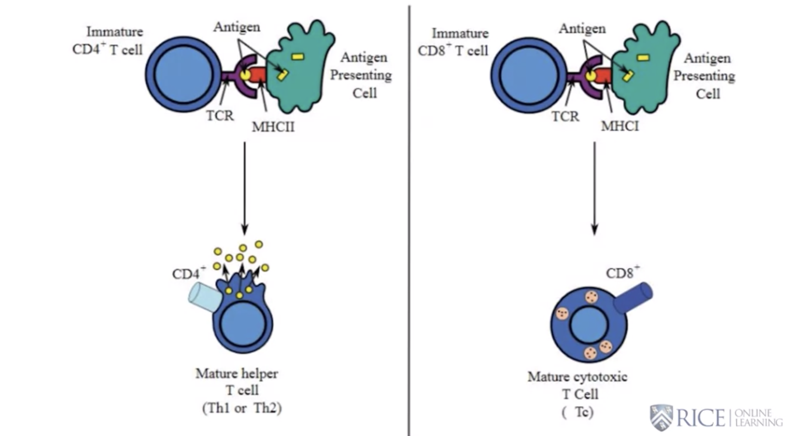
TH cells have a variety of strategic ways of instructing the immune system into how vicious and how strong a response it should make to a particular threat.
- NK cells - fairly big cell with a round nucleus and a lot of granular inclusions. They don’t require T cell instruction and they are armed and dangerous. Has a Fas ligand that will up regulate apoptosis of the cell it sticks into. It has granzymes and perforin that will help to break up the cell and send it into asbestosis. They will also attack cells without the MHC stuck out since normal cells should have MHC proteins.
Lesson 6 - Primary Organs
Three primary lymphoid organs: bursa, bone marrow, and thymus.
The bone marrow is the primary organ that produces most of the immune cells in your body, and it has, of course, parallels with the bursa of fabricius in birds. It is primarily the bone marrow of the femur, the humerus, arm bones, hip bones, and sternum that do the production of most of your blood cells.
A lot of the bone marrow is made out of fat, which are cell type that sends out a lot of the signals that regulate hematopoiesis or the development of blood cells. It makes sense because the amount of fat you have will essentially signal your nutritional status and let the cells know just exactly how much energy they have to keep going. This is where NK cells arise and where B cells rearrange their genes as part of their development. T cells will start out here, but they will migrate into the thymus to rearrange their genes.
Thymus - contains a cortex or outer layer and an inner layer the medulla. The T cell progenitors (relative undifferentiated state) are going to start out coming into the outer layer and work their way inwards. They will rearrange these cells for their receptors to produce a variety of cell types that can recognise antigen.
The cells are then checked to determine whether or not they can also recognise a MHC molecule (positive selection), which is going to be critically important to their function. If they pass that test, they begin migrating towards the inside.
The medulla region of the thymus is the place where cells undergo negative selection. This stage will get rid of T cells that recognise your own self antigens. That’s particularly important for Th cells because if we can do a good job of cleaning these guys out in the medulla, then we’ll see it’s going to be much easier to dump down a stray misbehaving cell later on when you’re trying to prevent auto-immune diseases.
The selection process starts with rearranging genes and a lot of cells die off in that because they don’t make a productive rearrangement. Next positive selection makes sure that the T cells combined MHC. Then negative selection in the interior to make sure that they can’t recognise your own self antigens. Cells that pass that test leave in the circulation and head out to coordinate your immune response. Cells that fail any of these tests will die, and well over 95 percent will undergo apoptosis as part of this process.
Lesson 7 - Lymph: Fluid, Vessels and Nodes
The secondary organs of the immune system form an interconnected surveillance system where the immune cells gather and exchange information. The lymph, lymphoid vessels, and lymph nodes are a critically important part of this system. Circulation among the organs includes both lymph and blood. The blood makes a round trip, while the lymph makes a one-way trip from the organs out.
Lymphatic system picks up drained interstitial fluid from tissues, which is picking up antigens, white blood cells, debris from infections, and all other kinds of information, is going to be gathered up and filtered through the lymph nodes, where the antigen is trapped and acted on. Eventually, these vessels grow into larger ones that empty into the thoracic duct, which in turn empties into the left subclavian vein, and then, enters the heart so it will rejoin the blood circulation.
Just in the last couple years, scientists have found that the lymph system does indeed extend into the head and it is called the meningeal system. We now know that the head and indeed brain is specifically under immune surveillance. There is a collecting vessel that runs over the top of the head, and it connects with the deep cervical or neck lymph nodes.
Anatomy of lymph nodes - fluid coming in from the outside and this is where the tissues drain into that lymph node.
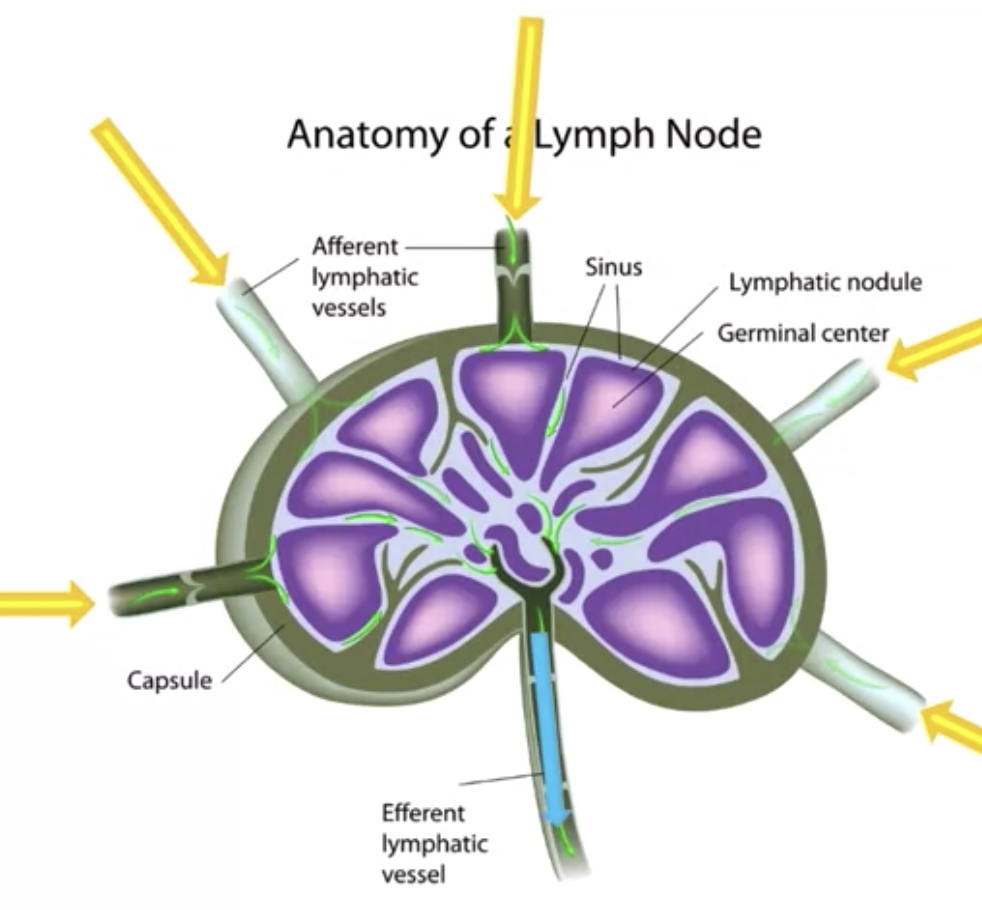
- The cortex or outermost part holds the follicles and the B cells. The medulla or the interior part of the lymph node is where mature B cells leave, interacting with T cells on the way out. B cells that are activated by antigen are going to wind up in follicles and they are in the cortical region of these lymph nodes. Some B cells will enter this follicle, which develops basically after antigen exposure. If a B cell has spent time in a secondary follicle, it is in there learning to make an antibody that binds more tightly to the particular pathogenic antigen.
Lesson 8 - Other Secondary and Tertiary Organs
The lymph nodes are not the only place important in activation and instruction of B cells. We find follicles of the same type in the spleen and in regions of the gut mucosa. All three of these sites are for that reason termed secondary lymphoid organs.
Spleen - the spleen has a good blood supply going in and out because its purpose is to filter and monitor your blood, not your lymph. It has red pulp tissue where the macrophages recycle old red blood cells. It has white pulp tissue where T cells participate in immune surveillance. And there is a marginal zone that has B cells and those B cells are in follicles, like the ones in the lymph node.
The tonsils, appendix, and Peyer’s patches in the intestine of some animals will also participate in the activation of B cells and be part of this secondary lymphoid tissue
There is the mucosal associated lymphoid tissue (MALT), the bronchial associated lymphoid tissue (BALT), the nasal associated lymphoid tissue (NALT), and gut associated lymphoid tissue (GALT). These tissues have a whole bunch of different immune cells there that are surveilling what’s going on and responding to it.
In the GALT, if we take a closer look, we will see M cells, which functions as a pocket or a meeting place. In this area, it is essentially sequestering a bunch of immune functions cells which interact together.
The skin is not a secondary lymphoid organ, but rather it is a tertiary organ. The reason you don’t call it secondary, despite its importance, is that it doesn’t produce follicles where B cells will mature a class switch. Keratinocytes express MHC2 and can actually present antigen to T cells assuming the T cells are wandering around in this particular tissue.
Lesson 9 - Final Issues
Necrosis, you have a cell that basically swells, breaks open, spills its guts and causes a lot of inflammation.
Apoptosis is a controlled way of killing off a cell and disposing of the contents; the nucleus shrinks, the cell shrinks, it blebs into little bite size packets and that makes things easier for the macrophages to clean up and it also prevents it from spilling cytoplasm all over the place and producing inflammation.
The difference between apoptosis and necrosis is like the difference between imploding a building and blowing it up. If you implode a building, you take it down in a very controlled way that minimizes damage and minimizes the spread of debris. You blow things up and heaven only knows what kind of a mess you make and how many people you hurt.
Phylogenetic evolutionary sources of the immune system - the adaptive immune system is only found in vertebrates, organisms that have a backbone. We belong to the Phylum Chordata however one of the very first types of chordates does not have an adaptive immune system.
What we see in the early fish or the beginnings of the adaptive immune system generally concentrated around the gut where they’re exposed to the worst there is. As we look at the evolution of increasingly complex fish and eventually tetrapods, we see more and more elements of the immune system: the thymus, other primary organs.
Cells undergoing apoptosis shrink and partition themselves into membrane-bound packets, whereas necrosis causes cells to swell and break open. The packets are phagocytised by macrophages and neutrophils. They may also phagocytise necrotic debris, but this is much harder to gather up and often produces damage before phagocytes can clear it away. Unhealthy cells often receive instruction to undergo apoptosis, and often in response to antigens displayed on MHC I.
Week 3 - Innate Immunity
Lesson 1 - Basic Considerations
All organisms have some sort of innate immunity. All vertebrates have an adaptive immune system, which is that they reorganise genes. All vertebrates belong to the Phylum Chordata but the more primative members of this Phylum do not have an adaptive immune system, such as the lancelet.
Lesson 2 - Inflammation
In the event of a breach of the skin, chemical signals (chemokines) will attract immune cells from the blood stream to the area. This causes local swelling and heat (flame) while the area is being treated. The proximate cause of swelling is fluid accumulation. This in turn results from increased permeability the blood vessels, a response that promotes migration of phagocytes. Changes in the endothelium related to infection lead to the stick and release of neutrophils, which in turn leads to rolling.
Lesson 3 - Innate Targeting of Pathogens
After many years of evolution our genome encodes various pattern recognition molecules that can detect a host of pathogens. For example, Toll Like Receptors can recognise compounds from viruses and bacteria. The innate immune system is not as specific as the adaptive immune system and instead will recognise a class of molecules rather than specific peptides. Once recognised, the innate immune system will trigger an immune response to rid the pathogen or foreign material.
In particular, endoplasmic TLRs, which identify non-self nucleic acids, reside in vesicles derived from phagocytosis since these nucleic acids reside in protected parts of a disease agent and only become accessible when digested.
Lesson 4 - Myeloid Cell Function
The myeloid progeny produces all the innate system cells, namely the neutrophils, macrophages, and NK cells. The neutrophils (first responsers) and macrophages can phagocytise foreign cells but only the macrophages can present the antigens to TH cells. Once phagocytosis has occurred, a phagolysosome complex is formed and inside this complex is a lot of highly toxic compounds used to destroy the pathogen. Image the scene from Star Wars where they fall into the trash compactor. Some bacteria such as the ones causing TB and leposy are resistant to the phagolysosome and actually use the macrophages as a means of transport. However, the strength of the immune response may determine whether pathogens will be destroyed or not.
Contents of the phagolysosome include:
- oxidants, including hydrogen peroxide
- proteolytic enzymes
- peptides that disrupt bacterial membrane
- nitric oxide (NO)
Lesson 5 - Innate and Adaptive Immunity Compared
Innate: all organisms, no gene rearrangement, pattern recognition of a class of molecules, and is always ready.
Adaptive: fish, amphibians, reptides, birds, and mammals, rearrange genes, specific recognition, takes around 2 weeks to mount a response.
Week 4 - Antigens and Antibodies
Lesson 1 - Context
The use of models to represent and study biological phenomenon. Models are good but have their limitations. A Rube Goldberg machine is one way to model cell signalling but obviously is an over-simplification in that it doesn’t represent the complexity of the entire process.
Lesson 2 - The Immunoglobulin Superfamily
Members of the immunoglobulin superfamily all have the immunoglobulin domain which is a long strand of hydrophillic and hydrophobic regions, i.e. the globular region. This peptide backbone is folded into seven or nine beta pleated sheets and held together by a disulphite bond (S-S). Antibodies are made up of several of these structures.
The great freeze dry was a period where earth was frozen and melted in quick succession due to increased levels of CO2 from volcanic activity that resulted in a greenhouse effect. These conditions promoted life with lots of livable niches and little competition and promoting variation. Then, as competition heats up, the forms with a variety of more workable adaptations will leave more offspring. A lot of the mechanisms in our antibodies have descended from mechanisms that these lifeforms developed.
Lesson 3 - Ig Receptors and Antibodies
A lot of the terminology in immunology is based on research performed in the 18th and 20th century. As a consequence, the namings are archic. For example, the fractionation of blood plasma results in four fractions: albumin, alpha, alpha-2, beta, and gamma. The gamma fraction has immunogenic properties and make up the gamma-globulins.
The naming of the antibodies is also based on classic experiments where antibodies were enzymatically treated. The top half of an antibody is known as the Fab region (Fab2 when the two arms are connected) and the bottom is called the Fc domain.
Mercaptoethanol reduces disulfide (S-S) bonds to separate SH groups. This removes the major stabilisation that holds the heavy and light chains together and keeps the Ig domains in proper tertiary conformation. This therefore disrupts the structures that recognise the tertiary structure of the antigen preventing binding and precipitation.
Proteolytic enzymes do not result in the separation of portions of the heavy and light chains. Depending on where the proteolytic enzyme cuts the antibody, it may or may not be able to precipitate the antigen.
First the papain will cut the antibody into separate CDR arms (FAB units), each with light peptide and the N terminus of the heavy chain, and the Fc stem with the two C-terminal domains of the heavy chain. Disulfide bonds keep the two peptides together in each piece.
\-\ /-/
\-\ /-/ Individual FAB units
\-\ /-/
|-|
|-| Fc stem
|-|When mercaptoethanol reduces the disulfide bond, the top half of the heavy chain releases the intact light chain and the two bottom heavy halves separate.
Lesson 4 - Form and function
- An antibody is made up of light and heavy chains.
- Each individual arm of a light chain has two immunoglobulin domains; one constant and one variable. They are made up of either lambda and kappa genes.
- An individual heavy chain has four immunoglobulin domains that goes from the Fab region to the Fc stem. There is a oligosaccharide in the middle of the heavy chains that bend them.
Lesson 5 - Immunoglobulin Classes
Antibody classes are determined by the type of heavy chain it has. Two classes are defined by whether they have a flexible or rigid hinge in the middle of the antibody. Rigid bend could be an M, could be an E and flexible hinge, could be a D or an A, or a G.
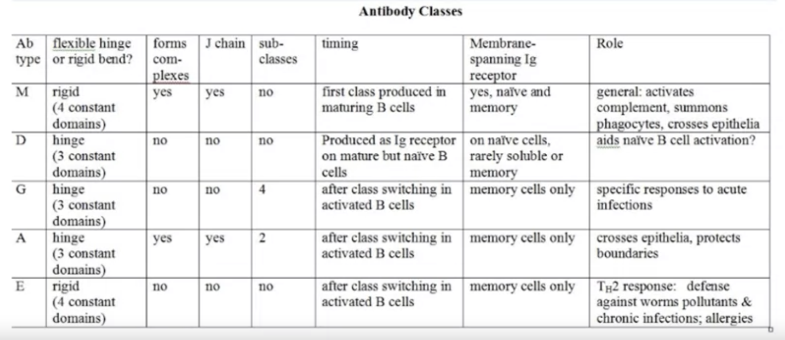
M and E class antibodies have a rigid bend. Thus the variable domain starts the N terminus, followed by the first constant, the second constant domain at the rigid bend, the third constant attached to the oligosaccharide and the fourth constant at the C terminus (possibly attached to the membrane spanning exons). In D, G and A class antibodies, the flexible hinge replaces the second constant. The D, G and A class antibodies have the prolines and disulfides.
Lesson 6 - Specific Ig Types
Different classes of antibodies have specific properties. They all recognise antigen in their Complementarity-Determining Regions (CDR)s or recognition sites at the tips of the arms, but the stem region is really where you find the adaptation for tweaking your immune systems response.
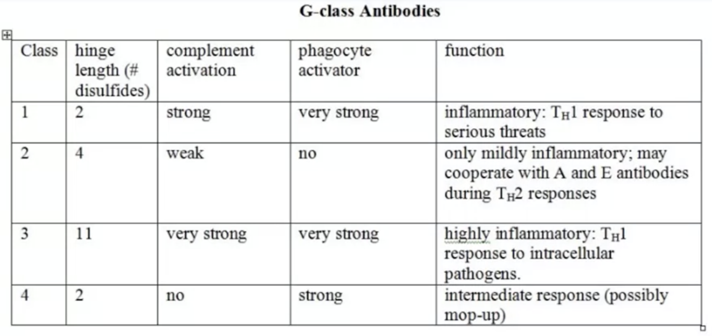
Lesson 7 - Immunoglobulins in Action
Six CDR loops, three on each of the arms of the antibody that are like fingers and will find some confirmation on an antigen. The interaction between the arms of the antibody and the antigen is sort of an enzyme substrate interaction. In general, what you’ve got is a series of weak interactions that sum up to a very sort of, if it works well, tight fit between the arm and the antigen. The antigen bind to the CDR, formed by the N–termini of the light and heavy chains. This usually takes place at the surface, using the three loops of each variable domain, although it is possible for an antigen to insert itself a short distance between the two chains.
Another thing that has to happen is that two receptors, which recognise different parts of an antigen, must cross-link. If antigens are not big enough, they won’t be immunogenic; it is just not going to cross-link two of the receptors on the surface of a B cell. We call such potential epitopes haptens, which is something that is too small to cross-link two receptors in a B cell. Penicillin may function as a hapten, and select for an antibody that recognises it. In addition, we need a second signal that goes into the cell when the B cell initially recognises an antigen in order to set off an immunogenic reaction.
Lesson 8 - Fc Biological Activity
The part of the antibody that determines biological activity is the Fc or stem of the Y of the antibody. For example, one of the things that the G class and M class antibodies do in particular with this Fc stem, is they summon your neutrophils and your macrophages to phagocytise pathogens.
In both A class and M class antibodies, these antibodies are held together by the J chain (using disulphite bonds) that puts them in complexes and also allows them to cross the membrane, i.e. transcytosis. The J chain allows the antibody to cross into the gut lumen, across lung and reproductive tract mucus membranes and into breast milk.
Isotype and idiotype refer to differences in two different parts of the antibody. Class switch from M class antibody to a G class, it will still be making the same recognition region and have the same idiotype. If we are looking at isotype, we are referring to the Fc stem. Two M class antibodies would have the same isotype, even if they recognize two different antigens, which would give them different idiotypes.
Lesson 9 - The B Cell Receptor
Immunoglobulin receptors are basically antibodies that have been stuck in the membrane and they are there to transmit information from the outside of the cell to the interior. They can slide around, but they can’t pop out.
When B cells recognise foreign antigens, they recognise it when two neighbouring receptors bind to that antigen and cross link, which begins the recognition process. However they cannot begin the signalling process, because their cytoplasmic regions are very short and don’t contain any signalling domains.
The co-receptors or sometimes called the co-signaling molecules that are heterodimers and linked by a disulfide linkage. They have very long tails with signalling domains in the interior and were originally called the immunoglobulin alphas and betas; they are now called CD79A and B. The tails have a region (immuno tyrosine activation motifs) that can pick up a covalent phosphate. The tyrosine refers to the fact that the phosphates will be put onto a tyrosine and will result in the activation of the system.
When two receptors cross link, the signalling molecules will be brought into contact with each other and change their confirmation and the ITAMs will pick up phosphates. Specifically, proteins will add phosphates covalently to the parts of these that are extending into the cytoplasm and form a docking site for signaling proteins to bind and begin the signaling pathway to the interior.
A mature but naive B cell has both M and D receptors, but not A, G or E.
Lesson 10 - Monoclonal Antibodies
Week 5 - Immunoglobulin Genes
An individual can produce a vast number of antibodies by mixing instructions in the genes of for heavy and light (kappa and lambda) chains.
Lambda gene expression - one leader-variable and one J-C pair come together at random. Only the promoter of the selected leader is activated enabling transcription from the beginning of that leader. Message processing removes the introns from between the V-L and the J-C regions and a 5’ cap and poly-A tail is added.
Kappa gene expression - has a series of about 40 leader-variable regions, five functional joining regions, and one constant region. Gene rearrangement places one leader-variable region next to one J gene region and only activating the promoter of the select leader-variable region. Processing is similar to lambda gene expression.
Heavy chain expression - has a series of about 40 leader-variable regions, followed by about 20 short diversity segments (each coding for 3 amino acids), then five or six J gene regions, and a series of constant regions. Transcriptions begins when a D region joins with a J, cutting out all the extra downstream D’s and upstream J’s between them but leaving any downstream J’s. One leader-variable region joins with the D and all the extra downstream leader-variable and upstream D’s are removed. The initial primary transcript starts with this LVDJ region with all remaining J’s and introns and constant regions.
Inside the bone marrow, the developing B cell synthesises the co-receptors and then rearranges a heavy chain gene. If the gene is functional, it is expressed and the other heavy chain gene is shut down. If not, the other heavy chain gene is expressed. If neither heavy chains works, the light chain gene is expressed. Otherwise the cell undergoes apoptosis. If there is a productive gene rearrangment, the receptors display an M-class receptor. This immature B cell will undergo negative selection. If it does not recognise self antigens it is now mature and leaves the bone marrow. If it does not recognise any antigenes, it undergoes apoptosis.
Recombination signal sequences (RSSs) flank the V, D, and J segments; 3’ end of V, boths sides of D, and 5’ end of J. Each RSS has a 7 nucleotide palindrome, a spacer sequence (12 or 23 bases = 1 or 2 helix turns), and nine AT-rich nucleotides, which aids the attachment of the V(D)J recombinase. The palindrome sequence is cut, forms a single strand that is cut again, and ligated with the rest of the sequence. Nucleotides are added to fill in the unmatched single strand regions, which is known as P-nucleotide addition. For heavy chains, N-nucleotide addition also occurs, where up to 15 additional nucleotides can be added at random in the junction.
Somatic hypermutation also occurs at the loop regions of the light and heavy chains.
Week 6 - Development of B Cells
B cell maturation starts with heavy gene rearrangement; recall the heavy gene has various control sequences and starts off with the VL with promoters, RSS, D and J regions, followed by the constant Ig domains and membrane-span domains. Control sequences include splicing signals, class switch signals, poly-A tail and transcription stop signals. The light genes (kappa and lambda) have the same regions (but different numbers) and signals except the diversity region.
Initial steps in the bone marrow for B cell maturation: haematopoietic stem cell -> lymphoid cell -> progenitor B cell (Ig alpha/beta transmembrane proteins with ITAMs and heavy gene rearrangement) -> (once productive heavy gene exists) Pre-B cell (light gene rearrangement) -> (two productive rearrangements) immature B cell with determined antigenic specificity (CDR). Next the immature B cell undergoes negative selection and becaomes a mature but naive B cell expressing IgM and IgD on the cell surface that is released into the plasma and heads to peripheral lymphoid organs.
Note that around 90% of the B cells never make it to the plasma; some are eliminated when they recognise self-antigens in the bone marrow signaled by the crosslinking of IgM.
Circulating B cells must encounter antigen that can bind to its receptors or they will undergo apoptosis within a few weeks; B cells can be activated in a thymus independent (TI) or dependent manner. There are a few antigens (TI antigens) that can prompt B cell development independent of TH cell co-stimulus. These antigen can also simultaneously activate toll-like receptors. TI activation does not induce class switching (only IgM) and does not produce memory cells. As antibodies build up, they bind CD-22, the Fc stem receptor and slows down production. This receptor is specific for antibody-antigen complexes.
However, the BCR does not signal effectively without contact with a Th cell. When a B cell binds antigen it presents the antigen much more effectively than macrophages or dendritic cells; a B cell can stimulate a Th cell at concentrations 100 to 10,000 times lower. When a Th cell attaches, they form a conjugate or immune synapse; this causes the Th cell to produce CD40L that signals the B cell through the CD40 receptor. This leads to the production of the second signal and activates the interlocking up-regulatory pathways of the B cell and they begin proliferating and differentiating.
Naive lymphocytes from the bone marrow enter the lymph and activation begins in the paracortex, where there is a high concentration of T cells, macrophages, and dendritic cells. The macrophages and dendritic cells activate Th cells and the naive B cells contact Th cells and present any antigen they have internalised via MHC class II. The B cell begins to divide and produce a clonal cluster at the boundry bewteen the paracortex and cortex. A few activated B and Th cells migrate together into a primary follicle in the cortex, which laters becomes a secondary follicle where B, Th, and follicular dendritic cells (they capture antigen-antibody complexes in beaded structures called iccosomes and present them to B cells) interact. These are the sites of affinity maturation where somatic hypermutation occurs for CDR selection. The iccosomes are a scarce resource and only centrocytes that have better afinity will survive and propagate. The final decision to make is to decide what class of antibody to send out with the refined CDR region produced by affinity maturation.
B Cell Specific Activator Protein (BSAP) functions as a master regulator and is only present in members of the B cell lineage, except plamsa cells. High levels tend to maintain a cell as a memory cell and low levels promote formation of plasma cells.
Constant monitoring of your antigens by Treg cells suppresses immune responses to your own proteins and benign commensal bacteria and fungi. More in the next course!
T Cells and Signaling
https://www.coursera.org/learn/immunologyfundamentalstcellssignaling
Week 1 - Complement
Great overview of the complement system on YouTube.
The complement system is an ancient system that interacts with other elements of the immune system; it consists of over 30 proteins, where most are soluble in the serum but some are part of the surface of cells. The end result is the formation of the Membrane Attack Complex (MAC), which punches holes in membranes and results in membrane lysis. Three different pathways converge on the production of the MAC and other related protective functions.
Most components of the MAC are synthesised in the liver and released in an inactive form; proteolytic cleavage activates the components. Elements of the complement pathway attach to the surface of cells under attack and attract phagocytes (macrophages and neutrophils), which can more easily attach to and engulf the cells; this is known as opsonisation. In addition, smaller cleavage peptides are soluble and diffuse away as an anaphylatoxin, which can activate the inflammatory response and attract phagocytes and B cells to the site of infection.
Most complment factors are designated by numbers but some have idiosyncratic names, such as factor D, factor B or homologous restriction factor. These factors may have designated subfactors, for example C1, which initiates the Classical pathway, is a very large complex protein made up of C1q, C1s, and C1r. The cleavage fragments are designated with letters, for example C4 is cleaved into C4a and C4b. Activation frequently involves the association of more than one factor to form an activated protein.
The complement pathways can be triggered with both innate and adaptive recognition and the end results are identical. C5 is cleaved into C5a and C5b; C5a serves as an inflammatory signal and C5b remains attached to the pathogen surface. C5b attaches to C6 and begins formation of the attack complex; this C5b6 complex attaches to C7 to form C5b67 that attracts C8 (C5b678), which inserts into the membrane. Finally, a complex gathers a ring of C9 peptides around it.
Activation by the Classical Pathway - C1 made up of 6 C1q , 2 C1r, and 2 C1s units that is activated when C1q binds antibody. When two C1q heads bind to the Fc stem of an antibody, the complex is freed. C1r becomes an active serine protease and cleaves C1s. C1s now becomes an active serine protease and cleaves C2 and C4. C4b binds to the target surface and attracts C2a, which join and produce a C3 convertase (C4b2a). This convertase cleaves C3 into C3a and C3b, and C3b joins C2a4b and becomes a C5 convertase (C2a4bCb), which breaks C5 into C5a and C5b. C5b initiates the formation of the MAC.
Activation by the Alternative Pathway - initiated by a variety of compounds characteristic of pathogenic surfaces. C3 spontaneously hydrolyses to C3a and C3b and C3b may bind to a pathogenic surface. C3b binds to B, brining it to the surface and is exposed for D, an active serum proteolytic enzyme. D cleaves B to Ba and Bb, Bb joins C3b, forming C3bBb (a C3 convertase). C3bBb autocatalyses more conversion of C3 to C3b, which joins C3bBb to form the C5 convertase (C3bBbC3b).
Lectin pathway - lectin is a general term for proteins that bind to specific carbohydrates. Mannose-binding lectin (MBL) recognises carbohydrate on the surface of microorganisms and resembles C1q. Bound MBL activates a serum protease MASP, analogous to C1r and C1s. Then same as the Classical Pathway.
Week 2 - The Major Histocompatability Complex
MHC is used to hold antigen for presentation to T cells. In humans, MHC is called HLA and the gene complex is on chromosome six, organised into 3 regions:
- MHC I - a set of three genes (HLA-A, HLA-C, and HLA-B), each of which codes for a fully functional MHC I alpha protein that then joins with a non-variable beta microglobulin (on chromosome 15). Displays antigen to Tc cells
- MHC II - a set of six genes coding for subunits (HLA-DP [alpha and beta], HLA-DQ [alpha and beta], and HLA-DR [alpha and beta]): three code for a MHC II alpha protein and three code for a MHC II beta protein. You can mix alleles within DP, DQ, or DR. Displays antigen (peptide lies flat in a groove at the binding site) at the end between alpha and beta to Th cells.
- MHC III - code for secreted proteins involved in the innate responses: complement proteins, cytokines, and heat shock proteins
HLA-DRB3, HLA-DRB4, and HLA-DRB5 (DRB3/4/5) are paralogs of HLA-DRB1, which encode the beta chain of HLA-DR molecules. DRB3/4/5 are inherited as haplotypes and these haplotypes only have one of the three DRB3/4/5 paralogs, i.e. the presence of one of these genes at the haplotype level excludes the presence of the other 2 genes.
Both Class I and II genes are tightly linked, with a crossover rate of about 0.5%.
The protein structure of both MHC Classes are similar; both kinds are membrane-bound glycoproteins with common structural elements, including a peptide-binding cleft.
Class I MHC - 3 major domains (alpha1, 2, and 3) with the peptide binding site between alpha1 and 2. Alpha3 is connected to the transmembrane segment with cytoplasmic tail. The beta microglobulin chain is located on chromosome 15 and the peptide is associated with alpha1 by weak linkages; the alpha3 domain and beta chain resemble each other and to the constant domains of immunoglobulins but no gene rearrangement. The beta peptide is necessary for the proper folding of the alpha peptide and its placement into the cell membrane. The alpha1 and 2 form a platform structure with 8 antiparallel beta strands connecting two helical regions; the space between the helices forms the deep groove that forms the peptide-binding cleft. This cleft is long enough to hold a peptide of 8 to 10 amino acids long.
Class II MHC - two major external domains for alpha and beta (alpha1 and 2, and beta 1 and 2) that has a transmembrane domain with cytoplasmic tail. Alpha2 and beta2 resemble alpha3 and beta chain of Class I MHC. Alpha1 and beta1 resemble alpha2 and alpha1 domains of Class I MHC. The alpha and beta dimers are joined by weak interactions and the antigen-binding cleft is formed by the alpha1 and beta1 interaction.
However note that unlike the alpha chains of other Human MHC class II molecules, the alpha subunit of HLA-DRA is practically invariable.
Class I and II molecules both bind peptide hydrolysis products of proteins via their respective cleft regions. Peptides produced by hydrolysis may come from any part of the molecule and are extended in the cleft, thus having no native second or tertiary structure. MHC molecules can bind a variety of peptides, although each MHC has some broad specificity.
Class I MHC - sides of cleft defined by alpha helices and bottom defined by beta sheets. Peptides bind best with nine amino acids but eight or ten can fit because of bending. This bending helps display the middle of the peptide from out of the groove of the cleft. Peptides are held on the ends by their anchor residues, which interact with specific side chains of the amino aicds of the class I MHC. Carboxy (COOH) terminal anchor (amino acid number nine of peptide) is typically hydrophobic; amino acid eight and seven may also be involved in anchoring. Middle amino acids may vary and they are ultimately what the T cell receptor will interact with.
Class II MHC - sides of the cleft defined by the alpha helices and the bottom defined by beta sheets. Ends of cleft are undefined since the peptide can stick out of cleft. Peptides bounds have 13 to 18 residues but only 13 of them fit the cleft. The peptides lie flat in the cleft and therefore interact with the class II MHC molecule at a series of places in the cleft region. Different MHCs will have different binding specificities based on these interactions and the MHC amino acids involved in the peptide interaction have the most number of polymorphisms.
Some MHCs bind some antigens better than others and some antigens do not seem to get displayed properly. In the case study of HIV “elite controllers”, people who have contracted HIV but maintain low levels of the virus, a variant in HLA-B binding groove was associated with these elite controllers. It turns out that this variant makes them particularly effective at binding and displaying HIV-derived peptides and thus very effective at activating Tc cells. However, this variant is also associated with increased risk of ankylosing spondylitis, an autoimmune disease which results in fusion of the spinal cord vertebrae.
Week 3 - Antigen Processing and Presentation
T Cell Antigen Recognition - get antigen ready for T cells, which only recognise peptide antigens and not native proteins that are attached to some kind of MHC molecule.
Tc cells have CD8 assisting the receptor and bind to Class I MHC plus antigen. The antigen displayed is endogenous, i.e. arises from proteins produced by the cell. Tc cells attack cells that display abnormal antigens.
Th cells have CD4 assisting the receptor and bind to Class II MHC plus antigen. The antigen presented is exogenous, i.e. arises from proteins hydrolyzed after phagocytosis or endocytosis. B cells, macrophages or sentinel dendritic cells do most of the presenting and are called APCs. Th cells respond by producing cytokines and other signals that stimulate a variety of immune responses.
Sentinel dendritic cells are the most effective antigen presenters and constitutively expressed Class II MHC and costimulatory molecules (B7) that can activate naive Th cells. Macrophages are activated by phagocytosis and only express Class II MHC and B7 after activation. B cells constitutively express class II MHC and express B7 after activation by receptor cross-linking with antigen that go through receptor-mediated endocytosis.
Peptide generation via proteasomes, which are more active under conditions of stress and damage. Proteins are targeted for destruction by complexing with ubiquitin and is transported to the interior of a proteasome. LMP2 and LMP7 (coded for by genes embedded in the class II region) replace other proteasome subunits under inflammatory conditions and promote the degradation of proteins into peptides of the correct size (9 amino aicds) and composition (carboxyl terminal is hydrophobic or basic). Next, the peptides bind to TAP1 and 2 (Transporters associated with Antigen Processing), which are embedded in the RER. TAP1 and 2 bind to the peptides, hydrolyse ATP, and drive them into the lumen of the RER.
Assembly with and display by Class I MHC - Calnexin, a membrane embedded chaperone associates with the alpha chain and promotes its proper folding. The beta microglobulin chain can then associate, releasing the calnexin. The complex now associates with the chaperone calreticulin and with tapasin, which brings the TAP transporter over to the complex. ERp57 binds over the whole distal end of the complex and the TAP protein transports the peptide via tapasin to the cleft, which displaces ERp57. The chaperones dissociate and the antigenic peptide stabilises the MHC I molecule and allows it to exit the RER to the Golgi. After sorting in the Golgi, the Class I MHC -peptide complex is released by exocytosis and becomes part of the plasma membrane.
Class II processing and presentation - phagocytosis or endocytosis to internalise antigen. Hydrolysis in vesicles by early endosome, late endosomes of endolysosomes, and lysosomes or phagolysosomes. Lysosomes contain a variety of hydrolytic enzymes that will digest foreign proteins and remove any carbohydrate and lipids attached to them. The net result is a collection of peptides, most of which are 13 to 18 amino acids long and an array of miscellaneous digestive products.
Class II MHCs are synthesised by the RER, just like Class I. However, vesicles with Class II MHC are targeted by the Golgi differently. Three pairs of a complete Class II MHC alpha beta heterodimer associate with a trimer of invariant chains. This invariant chain plays an important role in the sorting process by blocking the cleft and preventing premature binding of the incorrect cytosolic antigen. It also acts as a chaperone to help fold the alpha beta peptides into proper conformation and helps them exit the RER. Class II MHC-invariant complexes leave the Golgi and fuse with the early endosomes. As the antigen and complexes move from the early to late endosomes to lysosomes, the invariant chains get degraded but leaving a fragment called the CLIP that still blocks the cleft. HLA-DM removes the CLIP and exposes the Class II MHC to the antigenic peptides and it is this binding to the antigen that stabilises the Class II MHC complex.
Cross presentation - APCs pick up exogenous antigen and display them on Class I MHC. T cells can also recognise bacterial lipid derivatives and these are presented by a group of non-classical MHCs: the CD1 family of 5 genes (A - E). The overall structure of the CD1 molecules resemble MHC I but present to Th cells like MHC II.
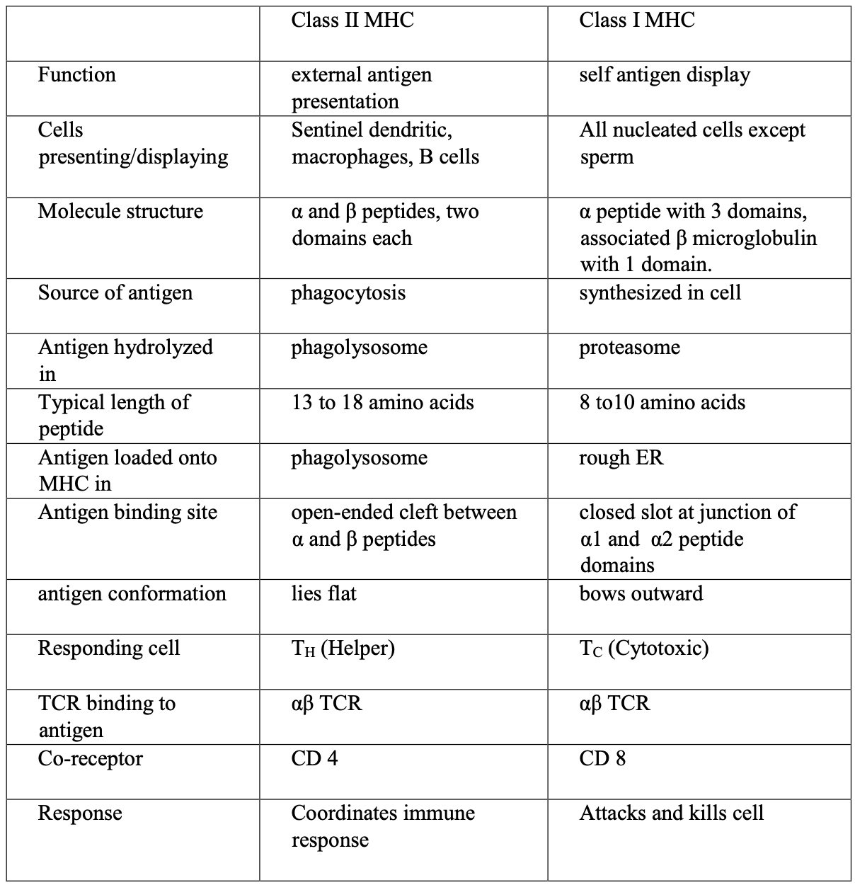
Week 4 - T-Cell Receptors
T cell receptors are heterodimers made up of either alpha-beta or gamma-delta peptides and they are one kind or the other; most T cells make alpha-beta receptors. Each chain has a variable “bread-and-butter sandwich” region at the amino terminus with three hypervariable regions in each chain. The transmembrane chains (also conserved and ending at the carboxyl terminal) are unusual in that they have positively charged (hydrophilic) residues that attract other (negatively charged) R groups on the transmembrane signal transducer, CD3.
Note that gamma-delta T cells function very differently from alpha-beta T cells; they can react with antigen directly, recognise lipid antigens presented on non-classical MHC, bind to non-classical MHC (T22), which does not bind antigen and seems to up-regulate their activity, etc.
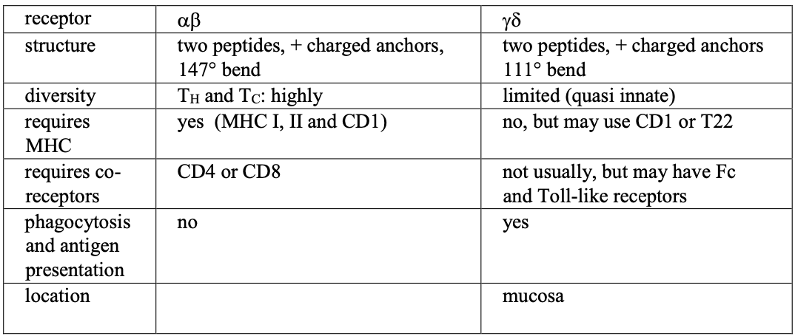
The alpha and gamma peptides are equivalent to the light chain and the beta and delta to the heavy. The mechanism of gene rearrangement is very similar to immunoglobulin genes; the RSS are the same and the RAG1 and RAG2 enzymes are the same one used in B cells.
Diversity generated by combinatorial joining of V and J segments, alternative joining, junctional flexibility, and P and N nucleotide addition (occurs in all chain rearrangement). However, a functioning TCR must recognise MHC and therefore is constrained. TCR do not undergo affinity maturation, i.e. somatic hypermutation followed by selection.
The TCR complex is made up of CD3, which is made up of three dimers: gamma-epsilon, delta-epsilon, and zeta-zeta heterodimers. The gamma, delta, and epsilon chains are all part of the immunoglobin superfamily.
Alloreactivity; tissue transplants are rejected if the transplant has MHC molecules not found in the host but this shouldn’t happen because TRCs should only react to self MHC. It seems that 1-5% of T cells are alloreactive, i.e. they can bind non-self MHCs. There is some evidence that T cell recognise foreign MHC via a binding mechanism somewhat different from that used to detect antigen attached to self MHC. In addition, the problem may arise in the inability of T-regs to recognise a transplant and protect it from NK, Tc or gamma-delta T cells.
Week 5 - T-Cell Development
Hematopoiesis -> stem cells differentiate down the lymphoid precursor pathway via ikaros, a Zn finger protein TF. Signals from surrounding cells to notch activate lymphoid precursors to differentiate into thymocytes. Have c-Kit receptor to prevent differentiation and express surface CD44, a cell adhesion molecule that targets them to the thymus. The thymocytes enter the thymus by extravasation from blood vessels at the cortico-medullary junction.
Four stages of double negative transitions:
- DN1 - thymocytes analogous to pro-B cell arrive in the thymus via CD44. Express c-Kit (CD117) which receives a paracrine factor called alternatively stem cell factor or steel; keeps cell in an undifferentiated state. Has the beta and gamma subunits of the IL-2 receptor but not the alpha. Has neither CD4 nor CD8, i.e. double negative, and no CD3 co-receptors and genes for TCR not rearranged.
- DN2 - Thymocytes stop dividing and begin rearranging their genes. Cells migrate through the cortex to the interior of the capsule and reduce the c-Kit or CD44 expression. Express CD-25 allowing them to assemble the complete IL-2 receptor. Also start to synthesis and display CD3 co-receptors, and RAG genes are expressed. A subpopulation of cells rearrange the gamma-delta genes but most thymocytes begin to rearrange the beta gene.
- DN3 - c-Kit and CD25 still present but declining. Productive rearrangement of beta chains combine with preT-alpha chains (similar to surrogate light chains in B cells) and CD3 signaling peptides form a pre-T-cell receptor.
- DN4 - thymocytes move inward to the middle of the cortex; beta gene undergoes allelic exclusion, allowing rearrangement of the alpha gene. Induces expression of both CD4 and CD8, leading to the double positive state.
Double positive (DP) events and positive selection - thymocytes move inward, remaining in cortex. RAG-2 expression increases and thymocytes begin to rearrange the alpha gene and then express it. RAG-2 expression decreases. Cells with functional alpha-beta TCR and CD3 survive. Cells must decide which MHC to respond to and whether they should continue to produce CD4 or CD8. Cells that bind MHC I will keep CD8 and lose CD4; cells that bind MHC II will keep CD4 and lose CD8. Importantly cells must not recognise self-antigen.
Negative selection and central tolerance - 98% of all thymocytes that start out in the thymus die. Positive selection results in significantly more cell deaths than negative selection. Immature thymocytes in the cortex of the thymus contact stromal cells, which express MHC. Only developing T cells that bind to and recognise self-MHC survive.
Negative selection against those cells that bind MHC + self-antigen takes place in the medulla of the thymus. Stromal cells of the medulla produce a varied buffet of self-antigens, including many proteins normally characteristic of differentiated tissues. They are able to achieve this by expressing the AIRE TF, which randomly up-regulates transcription in thymic epithelial and dendritic cells, which present antigen. This exposes developing thymoctes to many of the body’s antigens than developing B cells encounter in the bone marrow. The selection process removes cells with a very high affinity for MHC all by itself and cells with an affinity for MHC + self-antigen. Only T cells that respond to MHCs with non-self antigens survive and exit into circulation.
If a cell binds to MHC weakly, using the 1st and 2nd loops of the receptor and if it encounters an antigen outside of the thymus, that antigen will be foreign and will cause the whole complex to bind tightly enough to elicit a response. The strength of the binding (avidity) between the TCR complex and the MHC-antigen complex of the presenting cell determines whether the T cell will live or apoptose.
CD4+ Th cells - Th activation is necessary and the central event for the humoral response (production of antibodies by B cells) and cell-mediated (Tc) responses. Four subclasses: Th1, Th2, Treg, and Th17 (or Th3). APC presents an antigenic peptide on a cell II MHC molecule. Th cell binds this complex with a TCR-CD3 receptor that is aided by CD4. A cascade of signals, beginning at the cell surface and entering the nucleus, pushes the Th cell into a cell division cycle. This signal process necessarily involves transcriptional activation. Superantigens are viral or bacterial proteins that strongly bind to ternary TCR-antigen-MHC complex, resulting in hyperstimulation of the Th cell. Results in the overproduction of cytokines, i.e. cytokine storm, that can be lethal.
Th cell activation pathway - forming the immunological synapse. TCR binds to MHC II plus antigen; alpha-beta heterodimer forming the ligand (MHC-antigen complex) binding unit. CD-4 assists binding, locking on to constant domain (carboxyl end) of the exposed MHC II. TCR complexes cluster with one another and CAMs for ring surrounding the cluster.
Week 6 - Cytokines and Signaling
Three ways of transferring information: juxtacrine (touching), paracrine (local), horome (at a distance via circulation). Th cells are activated by APCs, using antigen presented on MHC II. Direct contact with infected or malignant cells activate Tc cells.
Paracrine signaling - cytokines (refers to cell to cell) or interleukins (IL - refer to leucocyte to leucocyte). Some cytokines have irregular names, such as IFN, which is a type of interleukin and more generally, a type of cytokine. Tumour necrosis factor (TNF) is named as such because it was identified as a factor that could get rid of malignant cells but it turns out to be a powerful and general immune up-regulator. Chemokines (chemical movement) signals movement of cells and attach to seven-span receptors, e.g. G-proteins.
There are three fundamental signals in basic immune up-regulation - A) immunoglobulin receptors, B) Type I receptors, and C) Type II receptors.
Immunoglobulin receptors are the most ancient form of signal transduction that evolved from molecules used to stick cells together. IL-1 and its receptor is the most fundamental immune signal of all; the IL-1 receptor cytoplasmic domain resembles tool-like receptor signaling regions and ultimately activates NFkappaB.
Type I receptors - the IL-2 signal is the largest class of immune-related signal systems with many specific versions such as the receptors for IL-4 and 5. Function as heterodimers or trimers and generally no single part functions optimally in any role without being bound to the others. Most version have two different peptides (beta and gamma) with extensive cytoplasmic signaling domains that get phosphorylated. If a receptor has a third peptide, it generally binds specifically to that IL signal and does not signal. The exterior domains of the beta and gamma peptides are composed of fibronectin domain, which are sometimes referred to as beta sandwiches as they are composed of two beta pleated sheets. In addition, the outermost (N terminal) domain has four conserved cysteines, which stablise the structure using 2 disulfide bonds. The proximal domain has a conserved sequence (WSXWS) motif.
The complete activated IL-2 receptor is a heterotrimer, with a beta, gamma, and alpha subunit. Resting T cells (except Treg) do not have a functioning alpha chain; activation of the T cell leads to up-regulation of the gene for the alpha chain and IL-2. External binding of IL-2 leads to changes in cytoplasmic conformation and signal activates associated Janus Kinase (JAK), which adds phophates to each other and to the cytoplasmic receptor tails. This provides a docking site for inactive TFs (STATS), which picks up phosphates, dimerises, and become active. The STATS migrate to the nucleus and up-regulate other genes leading to increase in cell division and blocking of apoptosis.
- Type II receptors - example: the IFNgamma signal, which includes a receptor for IFN gamma, a major inflammatory signal that is one of the most important signals in up-regulation of a Th1 response. Second largest class of immune-related signal systems, which signals resistance to viral infection, class switching, and upregulation of phagocytosis and enzymes used in the attack on captured pathogens. Function as heterodimers (beta and gamma) and very rarely as trimers, with extensive cytoplasmic signaling domains (JAK/STAT). The cytokine ligands that activate them, like those in Class I, have a series of alpha helices but unlike class I are dimers that bring the two peptides together and is activated when the two separate monomers are together.
Additional contributory signals - IL-17 signals and receptors are ancient and work in boundary defence and against extracellular pathogens. Promote development of neutrophils and B cell production of IgAs. Receptors on many cells types and not just immune cells, such as vascular endothelial cells, peripheral T cells. Their structure is varied with hetero and homodimers and trimers.
Tumour necrosis factor (TNF) receptor and TNFalpha ligand. Most TNF are juxtacrine factors composed of extensive beta pleated sheets and displayed in clusters of three subunits and use a lot of S=S stabilisation. Signal acts as an inflammation up-regulator, promoter of apoptosis, and results in appetite suppression and cachexia. Mechanism activates a series of internal up-regulators of apoptosis.
Chemokines and their 7-span receptors are important in directing traffic during inflammation. Chemokines such as IL-8 are smallist (90 to 130 amino aicds) proteins with alpha helix and beta pleated sheets stabilised with conserved cysteines. They associate with G proteins and a given chemokine may bind more than one receptor and a specific receptor may bind more than one chemokine.
Common themes in signaling: 1) from outside to inside, 2) changes in physiology mediated by adding and removing phophates, which leads to activation of TFs, 3) changes in cell to cell attachment and association, and 4) changes in shape, movement, and targeting
Phosphorylation - adding and removing phosphates to molecules is probably the most common control mechanism in controlling the activity of molecules in the cytoplasm, e.g. B and T cell co-receptors, JAK/STAT signaling, GTP/GDP exchanges.
Phospholipid hydrolysis - phospholipid is split, diacyl dlyceride (DAG) remains in the membrane, inositol-3-phosphate (IP3) diffuses into the cytosol and ER becomes leaky to Ca2+. The Ca2+ then binds to calmodulin, which prompts the activation of NFAT
Protein hydrolysis - less common that adding and removing phosphates and used in situtations where there is no need for reversing the signal. You can add and remove phosphates but once you have clipped a protein, you can’t reassemble it. Used in Notch signaling and apoptosis induction.
Cytoskeletal changes, e.g. when a neutrophil extravasates through an inflamed endothelium. The endothelium will release a chemokine, which activates a 7-span receptor. The receptor activates a G protein, which separates and picks up a GTO, and sets off a signal. This changes the conformation of the integrin, allowing it to bind to IgCAM. The association triggers changes in the attached talins and the talins organise the actin microfilaments.
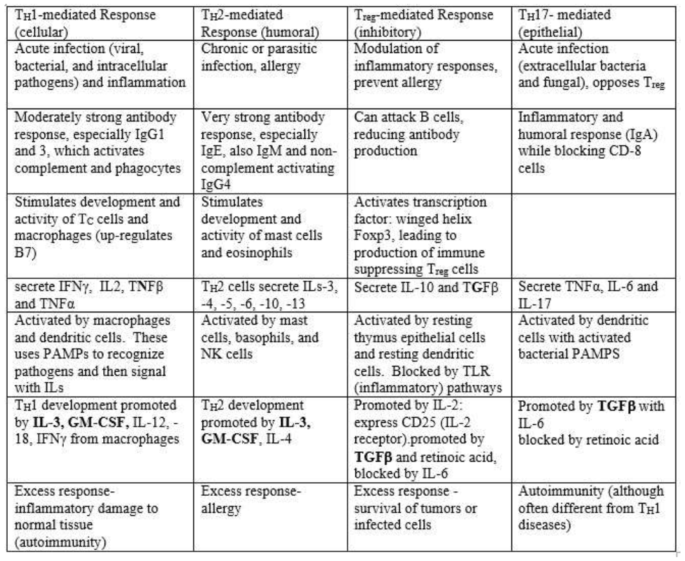
Death by Friendly Fire
https://www.coursera.org/learn/immunology-friendlyfire